asg_taewa_3extra_samples: 9date: 2022-06-13 11:35:57.941598 | max: 747 min: 383 mean: 611 |
max: 1736 min: 1399 mean: 1625 |
max: 54.52 min: 50.15 mean: 50.99 |
max: 1534 min: 818 mean: 1225 | ||
| 1: 2022.03.27_04-23_asg_taewa_3extra_0c47 | cpu=35 pods=0 treads=10 sc_min=14 warmup=90 | Dura-tion s | qps | CPU % | Err | |
| 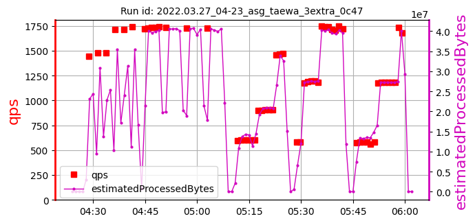 | 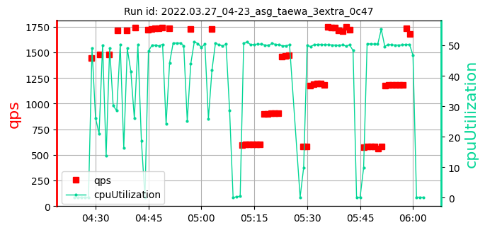 | 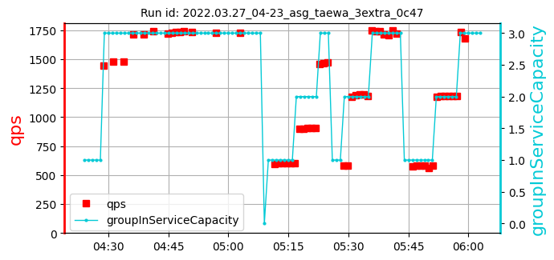 | [683, 429, 716] 610 | [1736, 1729, 1730] 1732 | [50.76, 50.39, 50.15] 50.43 | 1534 |
| 2: 2022.04.03_23-20_asg_taewa_3extra_41cf | cpu=35 pods=0 treads=10 sc_min=14 warmup=90 | Dura-tion s | qps | CPU % | Err | |
| 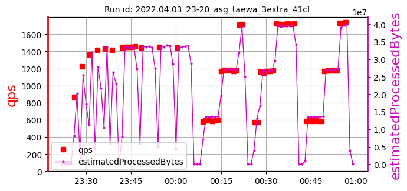 | 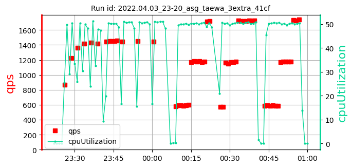 | 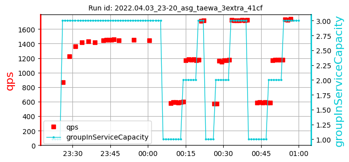 | [659, 404, 631] 565 | [1444, 1454, 1443] 1447 | [50.72, 50.6, 50.89] 50.74 | 1522 |
| 3: 2022.04.07_07-40_asg_taewa_3extra_41cf | cpu=35 pods=0 treads=10 sc_min=14 warmup=90 | Dura-tion s | qps | CPU % | Err | |
| 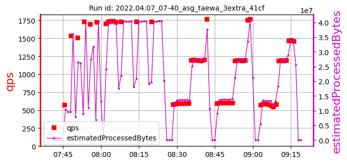 | 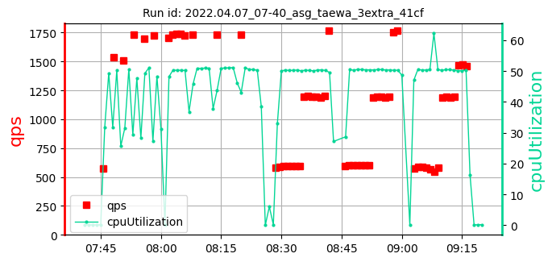 | 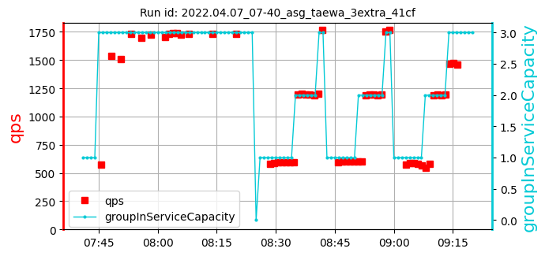 | [747, 732, 657] 712 | [1732, 1732, 1732] 1732 | [50.92, 51.01, 50.72] 50.88 | 1117 |
| 4: 2022.04.22_08-38_asg_taewa_3extra_41cf | cpu=35 pods=0 treads=10 sc_min=14 warmup=90 | Dura-tion s | qps | CPU % | Err | |
| 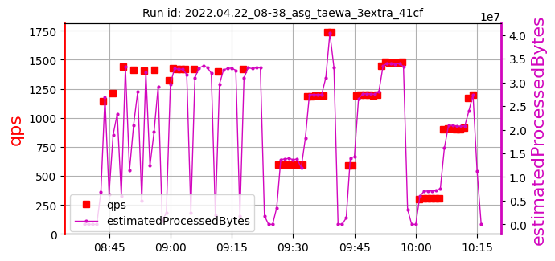 | 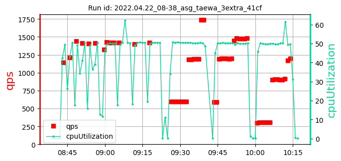 | 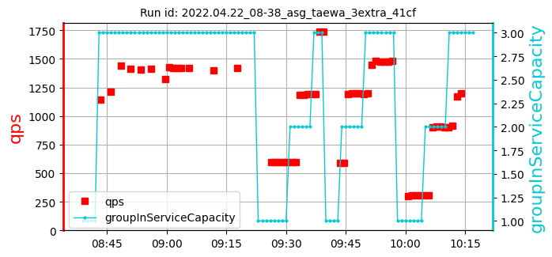 | [642, 390, 616] 550 | [1419, 1399, 1417] 1412 | [54.37, 50.54, 50.47] 51.79 | 1411 |
| 5: 2022.04.22_19-56_asg_taewa_3extra_41cf | cpu=35 pods=0 treads=10 sc_min=14 warmup=90 | Dura-tion s | qps | CPU % | Err | |
| 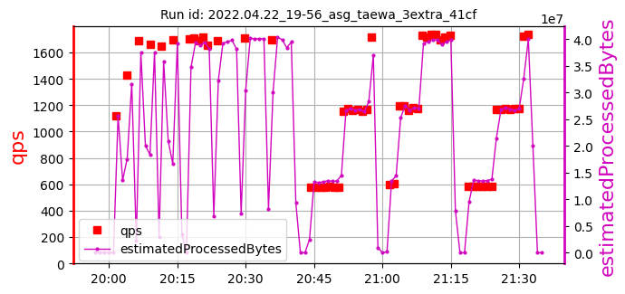 | 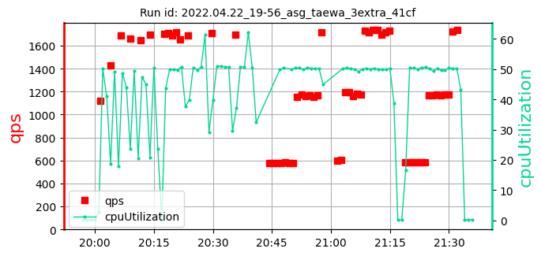 | 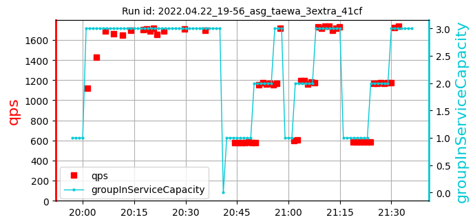 | [699, 383, 669] 584 | [1686, 1710, 1697] 1698 | [50.34, 50.89, 54.52] 51.91 | 1111 |
| 6: 2022.04.22_21-58_asg_taewa_3extra_41cf | cpu=35 pods=0 treads=10 sc_min=14 warmup=90 | Dura-tion s | qps | CPU % | Err | |
| 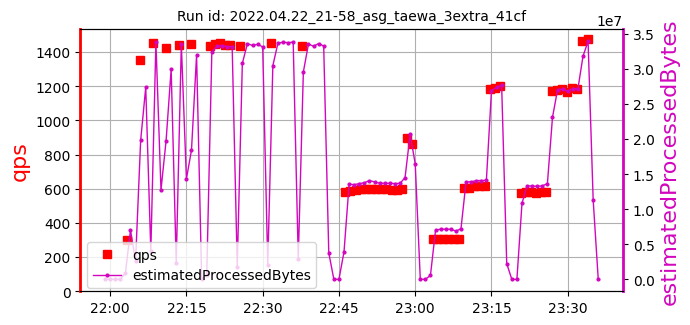 | 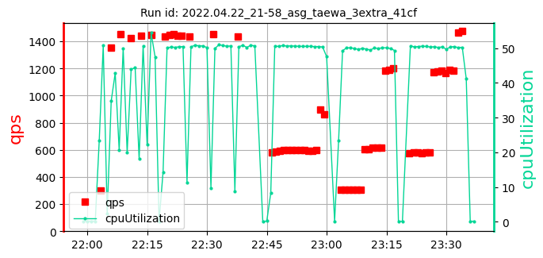 | 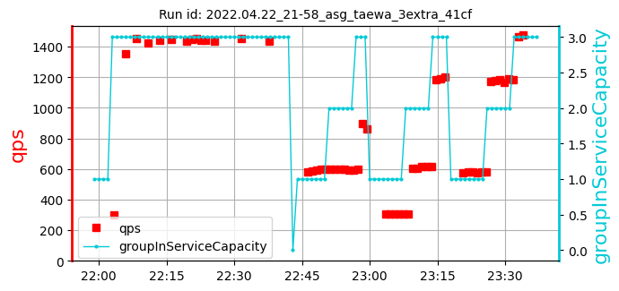 | [644, 632, 675] 650 | [1434, 1451, 1438] 1441 | [50.72, 50.78, 50.64] 50.71 | 1267 |
| 7: 2022.05.16_08-23_asg_taewa_3extra_d390 | cpu=35 pods=0 treads=10 sc_min=14 warmup=90 | Dura-tion s | qps | CPU % | Err | |
| 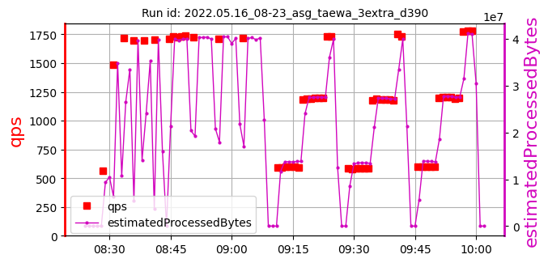 | 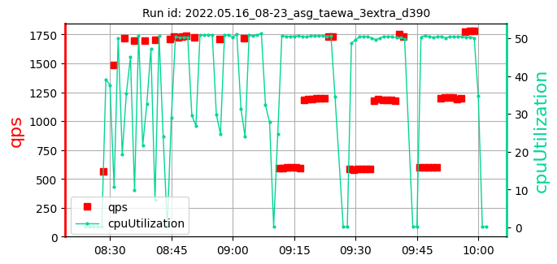 | 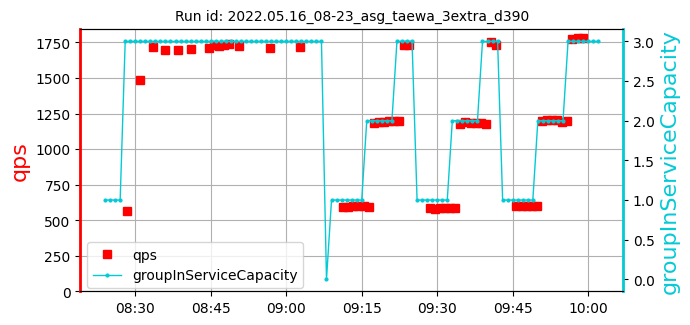 | [641, 628, 615] 628 | [1725, 1715, 1719] 1719 | [50.85, 50.67, 50.76] 50.76 | 1229 |
| 8: 2022.05.17_10-12_asg_taewa_3extra_d390 | cpu=35 pods=0 treads=10 sc_min=14 warmup=90 | Dura-tion s | qps | CPU % | Err | |
| 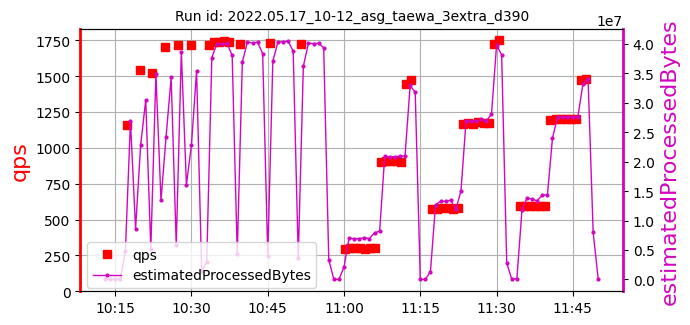 | 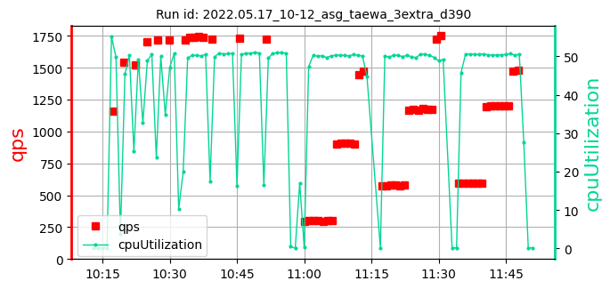 | 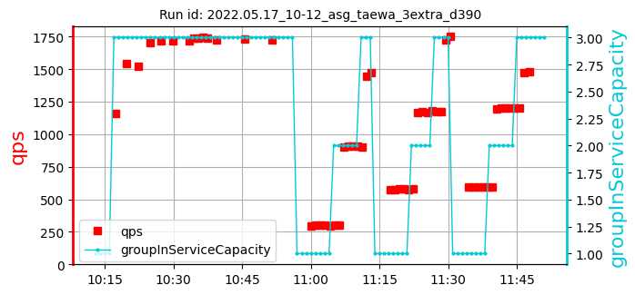 | [653, 580, 628] 620 | [1727, 1734, 1722] 1728 | [50.75, 50.91, 50.92] 50.86 | 1019 |
| 9: 2022.06.05_02-01_asg_taewa_3extra_7945 | cpu=35 pods=0 treads=10 sc_min=14 warmup=90 | Dura-tion s | qps | CPU % | Err | |
| 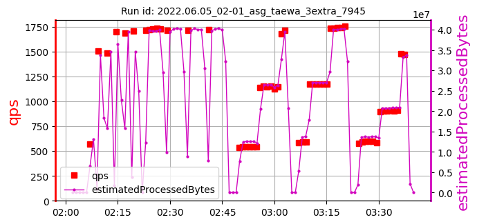 | 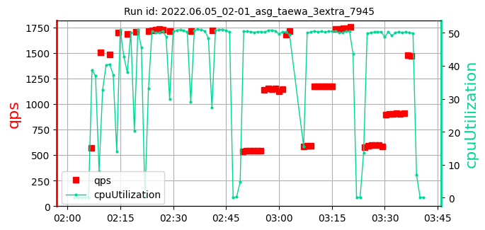 | 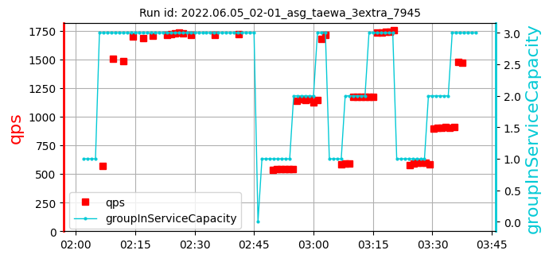 | [671, 417, 643] 577 | [1713, 1713, 1719] 1715 | [50.78, 50.83, 50.84] 50.82 | 818 |
asg_taewa_3extra_samples: 9date: 2022-06-13 11:35:57.941598 | max: 747 min: 383 mean: 611 |
max: 1736 min: 1399 mean: 1625 |
max: 54.52 min: 50.15 mean: 50.99 |
max: 1534 min: 818 mean: 1225 |